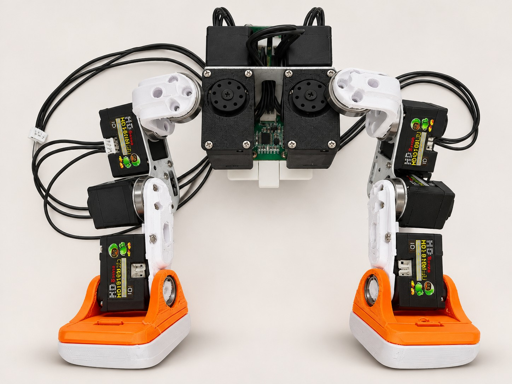
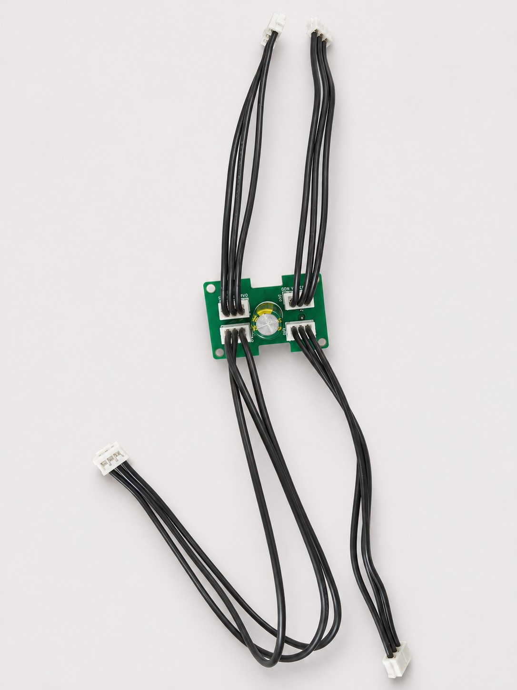
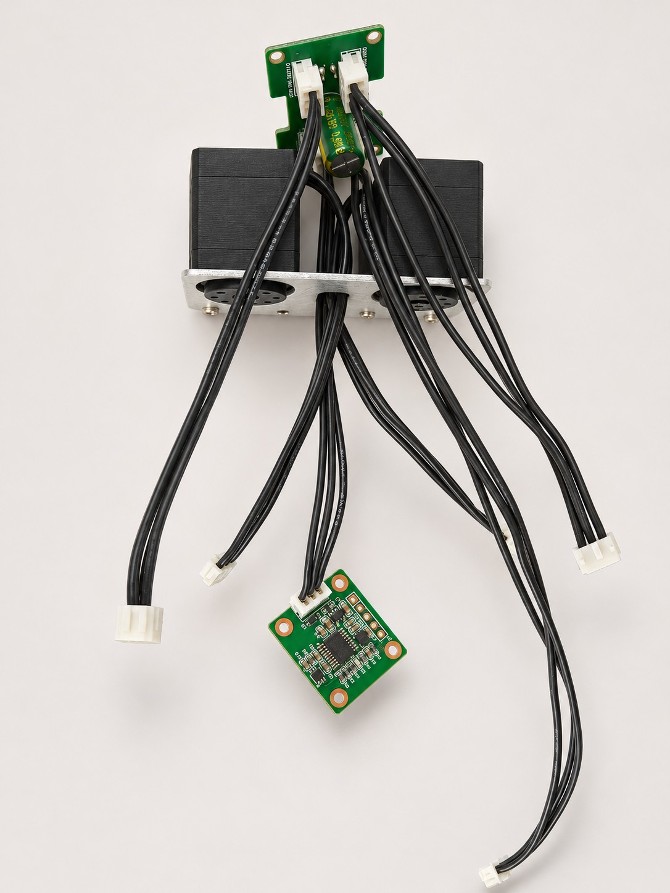
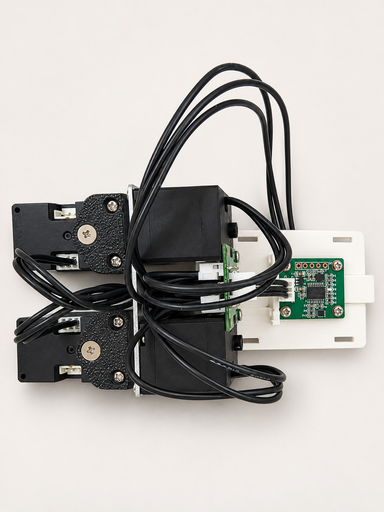
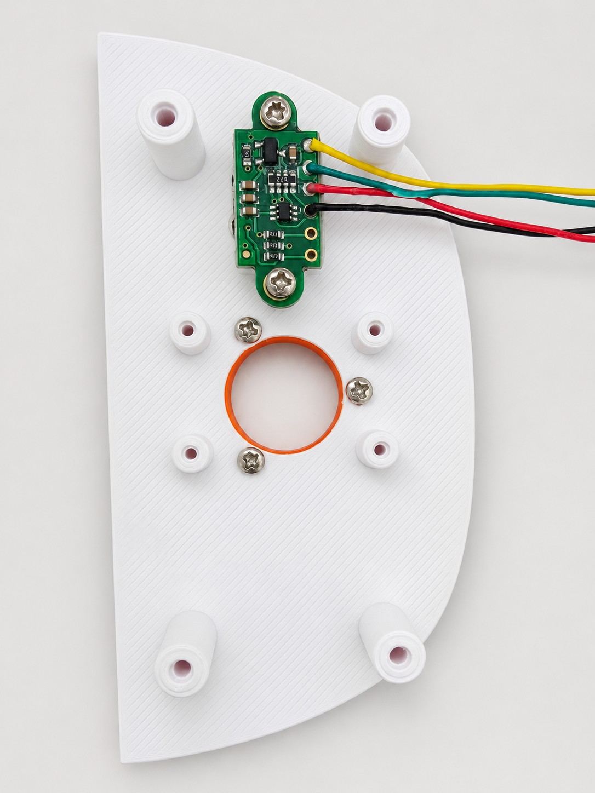
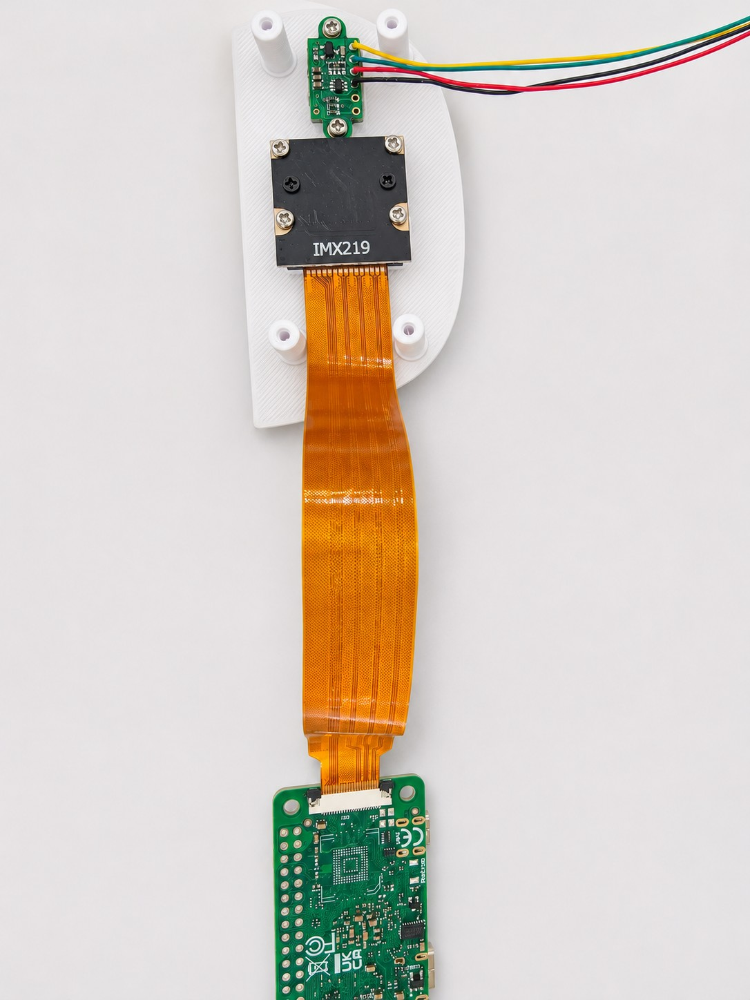
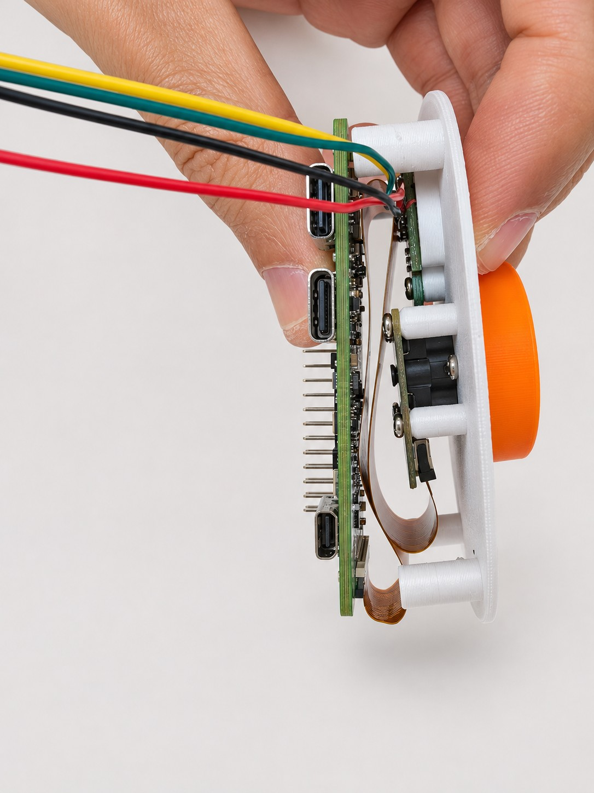
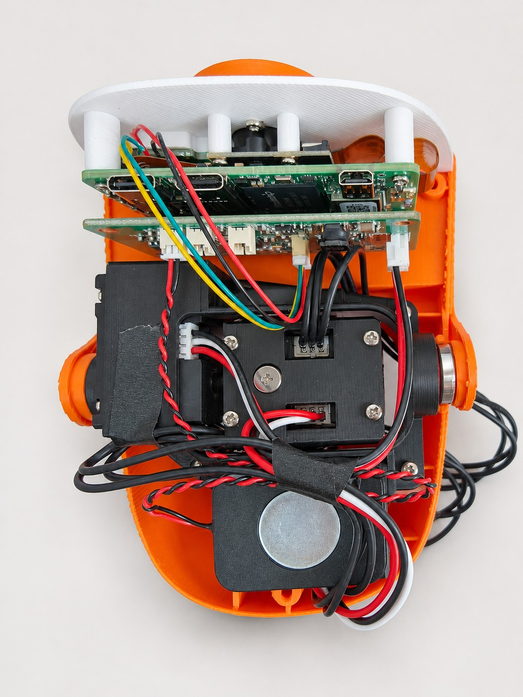
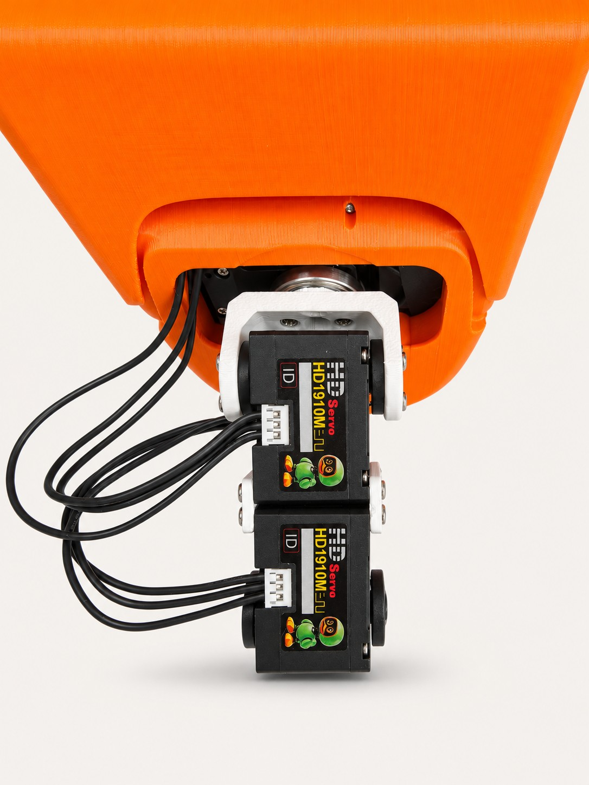

01
两条腿与躯干合装
两腿分别装好后，与躯干总成连接。对照实拍检查白色连接件、金属支撑板和脚掌朝向，再核对各关节的位置与编号。
左右以鸭子自身为准：右腿 10–14，左腿 20–24。跨关节的线束保留活动余量，不要拉紧或夹在连接件之间。
02 / ASSEMBLY
先看整机结构，再按部位组装，最后接线和核对。
需要：打印包、15 只 HD1910、轴承、螺丝、常规装配工具。
可下载缝合怪版打印包自己打印。
完成标准：打印件分类齐全，电池仓版本已确定，舵机与对应 ID 已核对。
下一步：组装两条腿 ↓需要：左右腿打印件、10–14／20–24 舵机、对应轴承、脚掌与螺丝。
左右按鸭子自身：右腿从髋到踝为 10、11、12、13、14，左腿为 20、21、22、23、24。正面观察时，与屏幕左右相反。
ASSEMBLY / PHOTO REFERENCE
对照实拍看脚掌、连接件与躯干的相对位置，配合 3D 视角核对左右方向。

两腿分别装好后，与躯干总成连接。对照实拍检查白色连接件、金属支撑板和脚掌朝向，再核对各关节的位置与编号。
左右以鸭子自身为准：右腿 10–14，左腿 20–24。跨关节的线束保留活动余量，不要拉紧或夹在连接件之间。
完成标准：两腿 ID 与方向对应，连接件固定，活动时无线束夹压或明显机械干涉。
下一步：躯干与电池仓 ↓需要：躯干打印件、已选电池仓、HUB、独立 IMU、电池接入配件。
ASSEMBLY / PHOTO REFERENCE
先分线，再预接躯干总成，最后固定电池仓与 IMU。照片中的黑线按信号名核对；点击图片可放大查看。

将四组三芯线束接入 HUB，插头插到底。四路总线分别用于头颈、左腿、右腿和 IMU，按实际装配位置安排线长。
四个总线口电气共网，不限定哪一个口接哪条支路。全黑线束按 GND、电源、DATA 信号核对，不凭线色判断。

参照实拍将 HUB、躯干舵机和 IMU 支路预先接好，先把线束从支架空隙中引出，再装电池仓，避免固定后难以穿线。
这张图是预接线阶段：IMU 暂未固定，下一步要装到电池仓定位位，不能悬空运行。

将电池仓装到躯干总成，把 IMU 贴合固定在背板定位位，保持规定的安装方向。线束沿两侧收纳，给电池滑入和卡扣动作留出空间。
板卡与插头固定后再整理余线，避开舵机、轴承和连接件的活动区；IMU 的朝向与 3D 装配说明一致。
完成标准：电池仓和板卡固定可靠，IMU 贴合主背板、端子朝上，HUB 安装方向正确。
下一步：头颈与板卡 ↓需要：30–34 舵机、头颈打印件、ZERO 3W、HAT、摄像头及配套外围。
HEAD ASSEMBLY / PHOTO GUIDE
从鸭脸内侧开始，按 ToF → 摄像头 → ZERO → HAT → 整理线束的顺序完成。断电后装配，点击照片可放大查看。

将 ToF 固定在鸭脸内侧的小板安装位，四根线从侧面引出，给摄像头和上层板卡留出空间。
按本图朝向，模块焊孔自上而下：黄 VIN、绿 GND、红 SCL、黑 SDA。

摄像头对准鸭脸开孔，按四角安装位固定。将摄像头排线接到 ZERO 的 CSI 接口，确认插入到位、锁扣扣好。
先选与摄像头版本对应的鸭脸打印件；排线接触面按实际接口确认。

将 ZERO 装到鸭脸立柱上，参照侧视图检查摄像头与主控之间的间距。排线沿空隙自然折回，避开螺丝和立柱。
排线不绷紧、不折成死角；核对 40 针排针与 HAT 配对座的朝向。

四芯 ToF 线束接 HAT J5，红黑喇叭线接 J1。J2、J9 为麦克风接口；外围接好后，再核对 HAT 与 ZERO 的配对朝向。
按接口编号和信号名核对线序；ToF 与喇叭的完整针序见下方。

将叠装好的 ZERO／HAT 和喇叭装入头部，余线收进两侧空隙，参照照片固定。给舵机、嘴部活动和开盖留出余量。
合盖前检查：排线不卡立柱，线束不碰活动件，插头未被拉扯。
实拍见上方步骤 01、04。ToF 模块焊孔自上而下是黄 VIN、绿 GND、红 SCL、黑 SDA；INT、LPn 留空。模块焊孔顺序与 HAT 针序不同，按信号对应。
| J5 针号 | 本组线色 | HAT 信号 | 模块端 |
|---|---|---|---|
| 1 | 绿色 | GND | GND |
| 2 | 黄色 | 3V3（3.3 V） | VIN |
| 3 | 黑色 | SDA | SDA |
| 4 | 红色 | SCL | SCL |
| J1 针号 | 本组线色 | 喇叭信号 |
|---|---|---|
| 1 | 红色 | SPK_R_P（＋） |
| 2 | 黑色 | SPK_R_N（−） |
喇叭黑线是 SPK_R_N 差分输出，不是 GND。J2、J9 是麦克风接口；换线束时按针号和信号核对。
ASSEMBLY / PHOTO REFERENCE
头部内部装好后，再核对颈部连接件和线束出口，让关节活动时线束有余量。

将头壳与白色颈部支架连接，核对连接件、轴承和螺丝位置。黑色总线线束从支架侧面引出，给转头和俯仰保留自然弯曲的余量。
不要把余线夹在头壳开口与支架之间。本图为头颈连接参考，颈部总成仍需继续与躯干连接。
完成标准：HAT／ZERO 配对座方向正确，摄像头与外围固定，头颈活动时无线束拉扯。
下一步：接线 ↓需要：与板卡版本匹配的三芯线束、电池供电线、HUB（已带缓冲电容）。
| 支路 | 连接顺序 |
|---|---|
| 头颈到躯干 | HAT → 34 → 33 → 32 → 31 → 30 → HUB |
| 右腿 | HUB → 10 → 11 → 12 → 13 → 14 |
| 左腿 | HUB → 20 → 21 → 22 → 23 → 24 |
| IMU | HUB → IMU 总线端子 J1 |
| 供电 | 电池 → XH2.54-2P → HUB CN1；核对正极／GND |
每条总线核对 GND、电源、DATA。颜色用于辨认示意，不替代实物针号与信号名；各板接口编号可能不同。
HUB 已带总电源缓冲电容，用于缓冲舵机瞬时负载，防止瞬时压降导致 ZERO 重启，无需单独采购；装配时核对供电极性。作者成品 IMU 已烧录 FT6，无需另行烧录；自焊新板、换芯片或维护升级时再使用烧录指南。 搭配本仓库电池仓并按上述方向安装成品 IMU，可直接使用作者的 IMU 标定参数，减少误标定导致的行走问题。
完成标准：线束插入实际端子，供电极性与电容极性已核对，关节活动范围内不夹线。
下一步：上电前核对 ↓装配完成后仍需完成本机舵机标定并核对 IMU 方向，再执行 HOME 与行走。
使用现成模型，完成刷机、标定与行走。